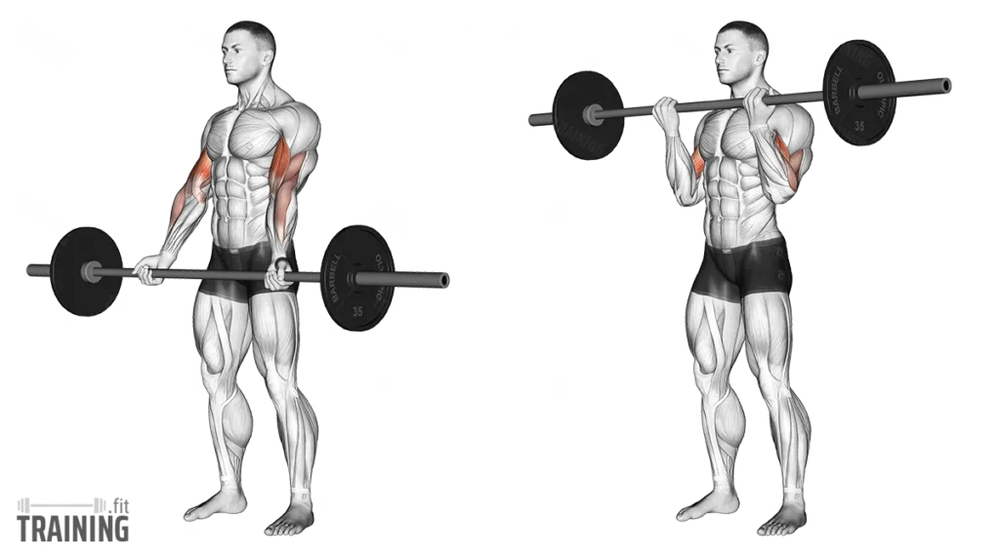
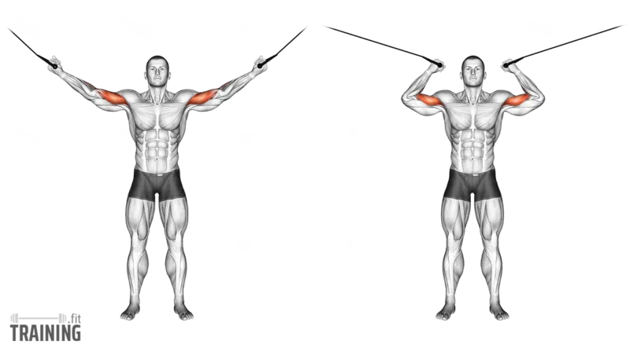
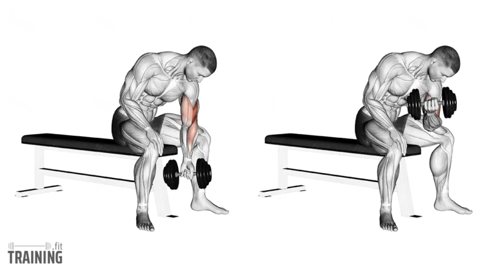
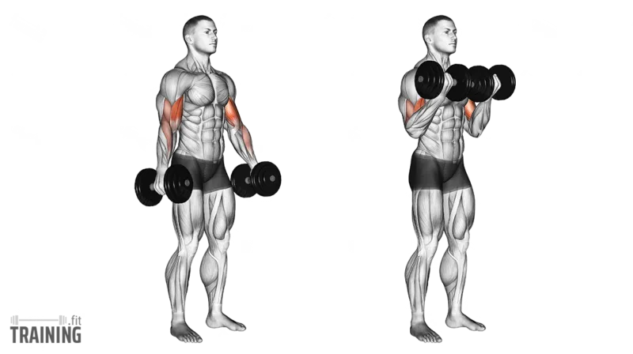
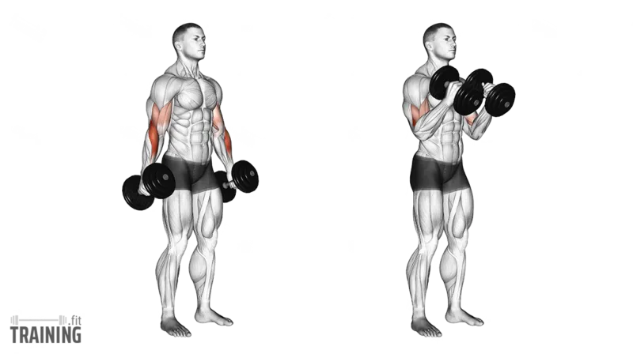
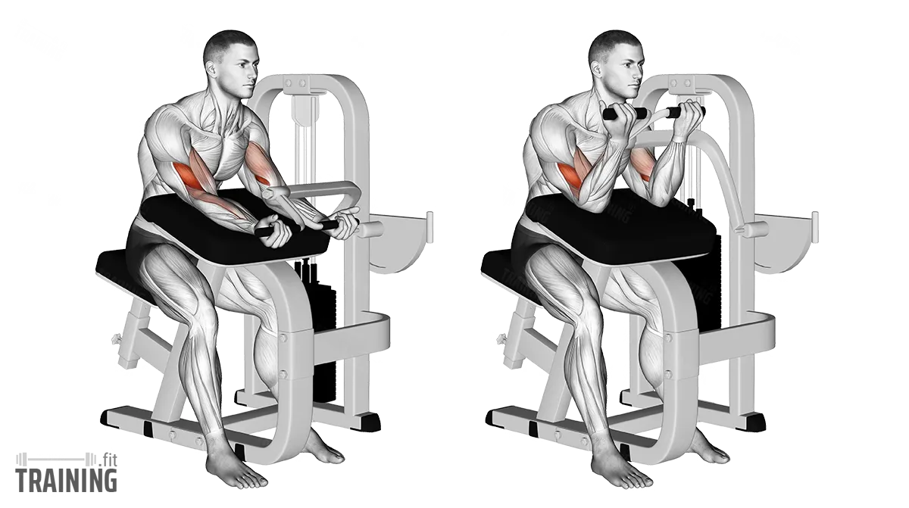

Exercise 01
Barbell Curl
A classic biceps movement that targets the biceps brachii and builds overall arm size.

Form
- Stand tall with hands about shoulder-width apart
- Keep elbows close to your sides
- Curl the bar upward toward your chest
- Squeeze at the top
- Lower slowly without swinging
Sets & Reps
Growth
3–4 × 8–12
Strength
4 × 6–8
Control
3 × 10–12
Tip: Do not rock your body back to move the bar. Keep the tension on the biceps.
Fact: Barbell curls usually let you use more weight than dumbbell curls, making them great for overall biceps mass.
Exercise 02
High Cable Curl
Targets the biceps through a strong contraction and keeps tension on the muscle the entire time.

Form
- Stand between the cable handles
- Raise your arms out to the sides
- Curl your hands in toward your head
- Keep elbows high and steady
- Slowly return to the starting position
Sets & Reps
Growth
3 × 10–15
Pump
2–3 × 12–15
—
—
Tip: Do not let your elbows drop. Keep them fixed so the biceps do the work.
Fact: Cable exercises keep tension on the biceps during both the lifting and lowering phase.
Exercise 03
Concentration Curl
A strict isolation exercise that focuses on the biceps peak and mind-muscle connection.

Form
- Sit on a bench with your elbow pressed against your inner thigh
- Let the dumbbell hang down
- Curl it up toward your shoulder
- Squeeze at the top
- Lower slowly and fully
Sets & Reps
Growth
3 × 10–15/arm
Strict
2–3 × 12
—
—
Tip: Use a lighter weight and full control. This is not a cheating exercise.
Fact: Concentration curls are great for improving the feeling of the biceps working through the full rep.
Exercise 04
Dumbbell Curl
Targets the biceps while allowing each arm to work independently.

Form
- Stand tall with dumbbells at your sides
- Curl the weights upward while keeping elbows close
- Squeeze at the top
- Lower slowly back down
- Avoid swinging
Sets & Reps
Growth
3–4 × 8–12
Control
3 × 10–12
Finish
2–3 × 12–15
Tip: Focus on a full range of motion. Do not cut the rep short.
Fact: Dumbbell curls help fix strength imbalances between the left and right arm.
Exercise 05
Hammer Curl
Targets the brachialis, brachioradialis, and biceps — building thicker arms and forearms.

Form
- Hold the dumbbells with a neutral grip, palms facing inward
- Keep elbows close to your sides
- Curl the dumbbells upward
- Lower under control
Sets & Reps
Growth
3–4 × 8–12
Thickness
3 × 10–12
—
—
Tip: Keep your wrists neutral and do not rotate the dumbbells during the curl.
Fact: Hammer curls are excellent for building the brachialis, which makes the upper arm look bigger from the side.
Exercise 06
Preacher Curl
A strict biceps exercise that limits cheating and isolates the muscle very well.

Form
- Place your arms on the preacher pad
- Grip the handle or bar comfortably
- Curl upward without lifting your elbows off the pad
- Squeeze at the top
- Lower slowly until your arms are almost fully extended
Sets & Reps
Growth
3–4 × 8–12
Strict
3 × 10–12
—
—
Tip: Do not slam the weight at the bottom. Keep tension on the biceps and move with control.
Fact: Preacher curls are one of the best exercises for reducing momentum and forcing the biceps to do the work.
Best Biceps Workout Order
For size, thickness, and peak contraction:
Barbell Curl — 3–4 sets
Dumbbell Curl — 3 sets
Hammer Curl — 3 sets
Preacher Curl — 3 sets
Concentration Curl — 2–3 sets
High Cable Curl — 2–3 sets
This gives you overall biceps size, arm thickness, peak contraction, and forearm support.